Attacker Secondary Missions
All decks
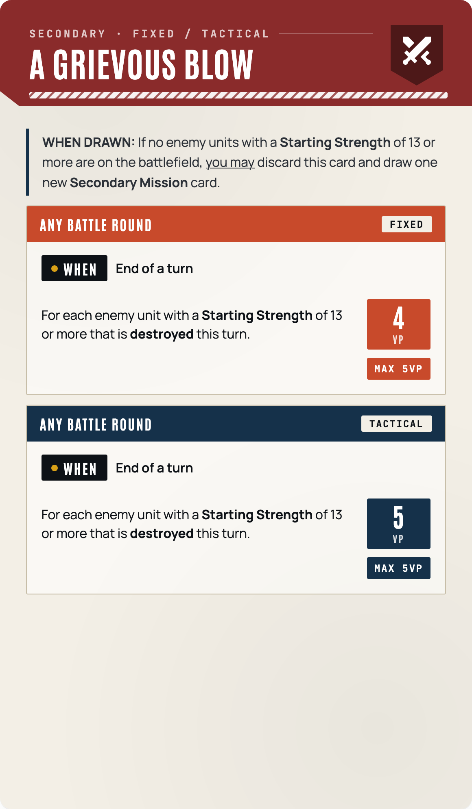
a grievous blow attacker secondary
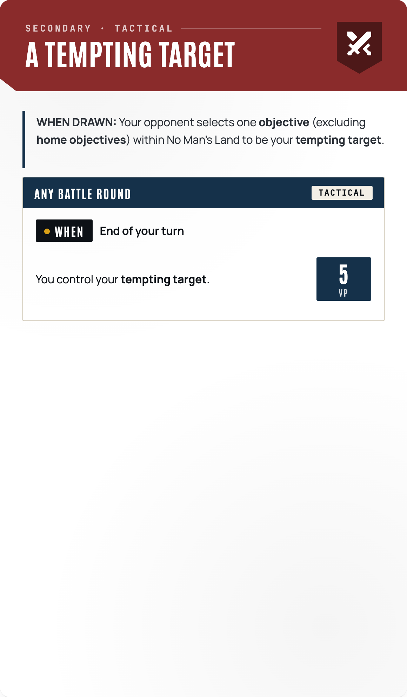
a tempting target attacker secondary
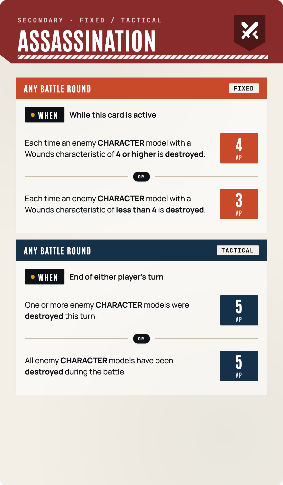
assassination attacker secondary
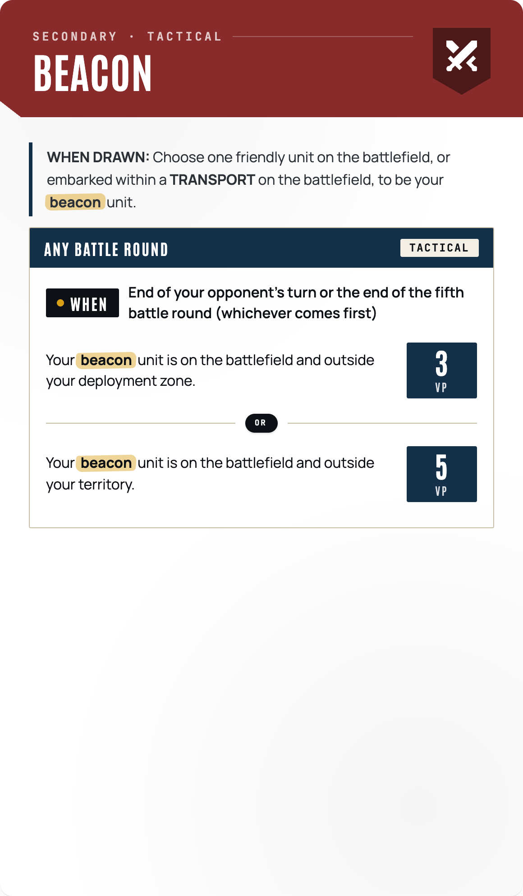
beacon attacker secondary
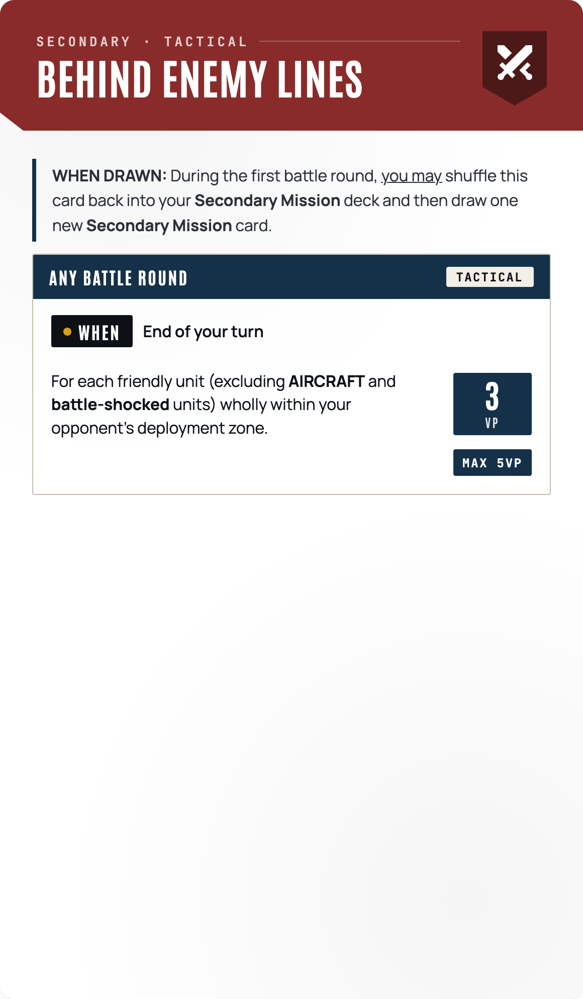
behind enemy lines attacker secondary
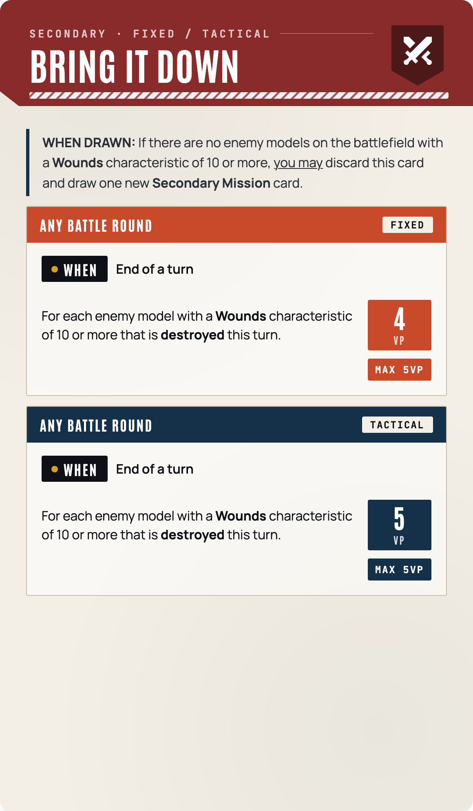
bring it down attacker secondary
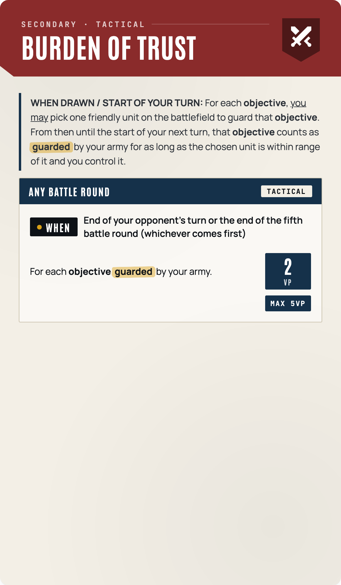
burden of trust attacker secondary
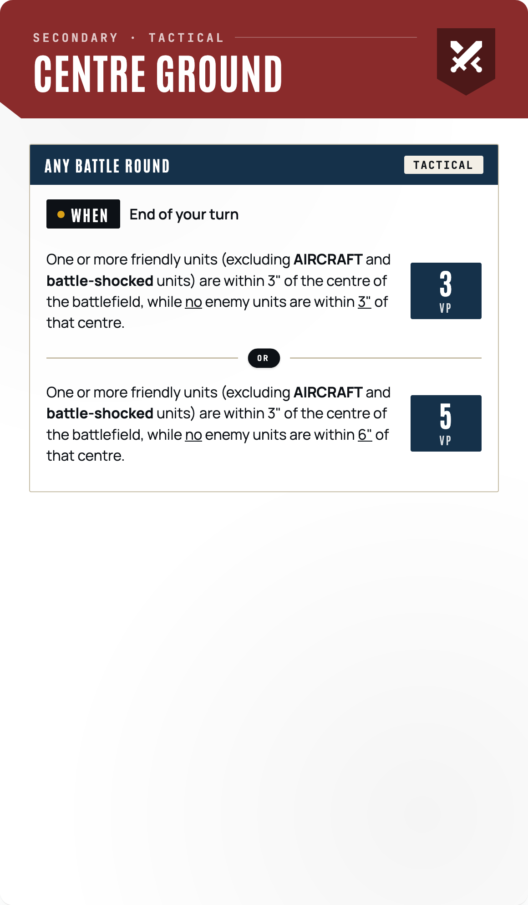
centre ground attacker secondary
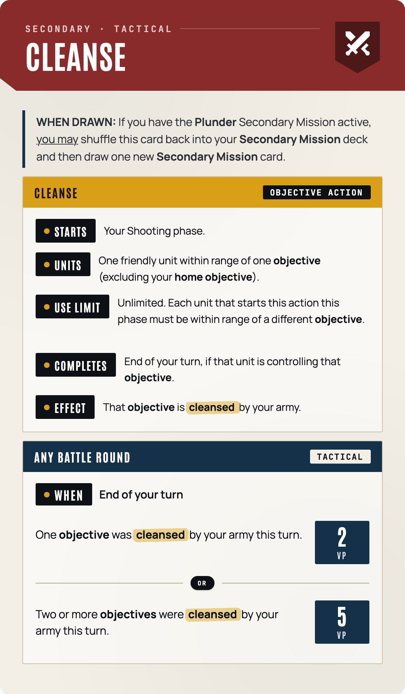
cleanse attacker secondary
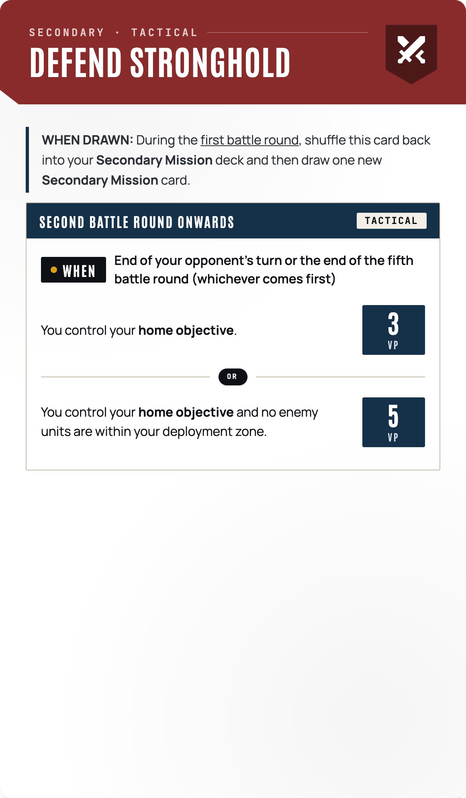
defend stronghold attacker secondary
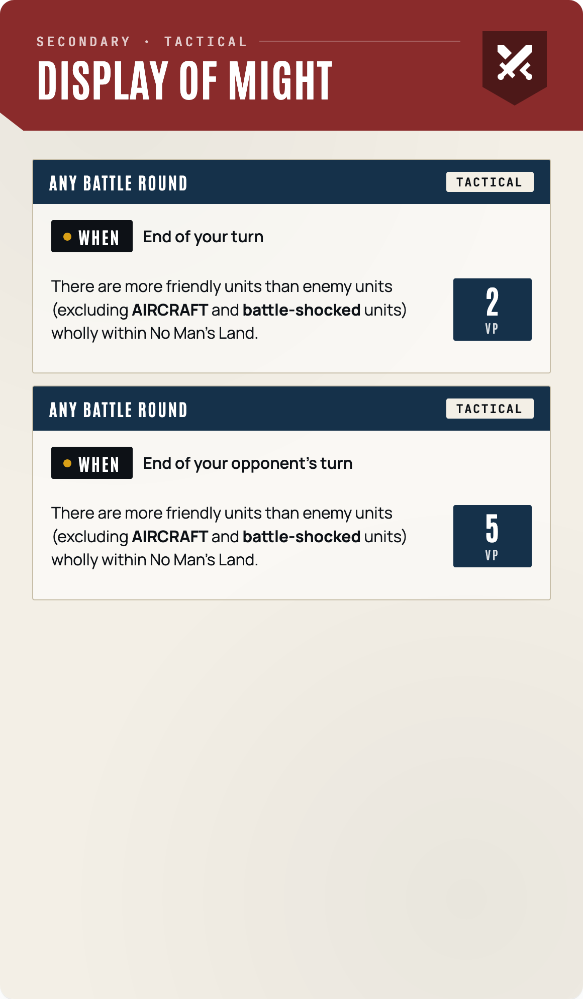
display of might attacker secondary
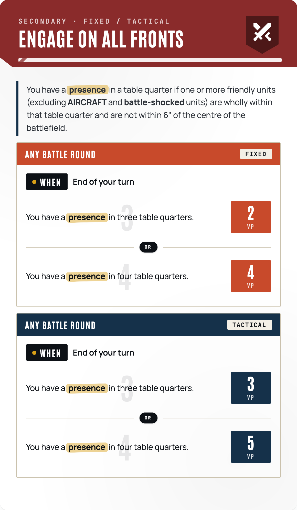
engage on all fronts attacker secondary
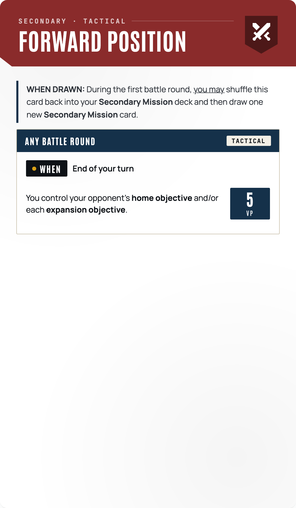
forward position attacker secondary
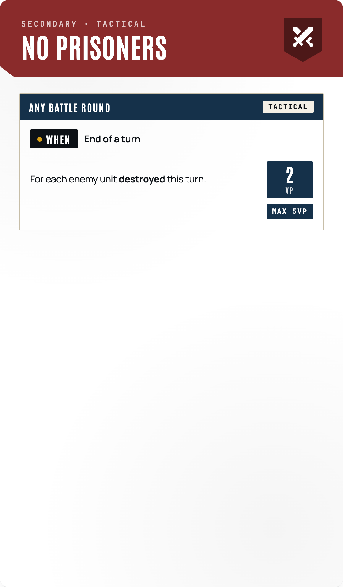
no prisoners attacker secondary
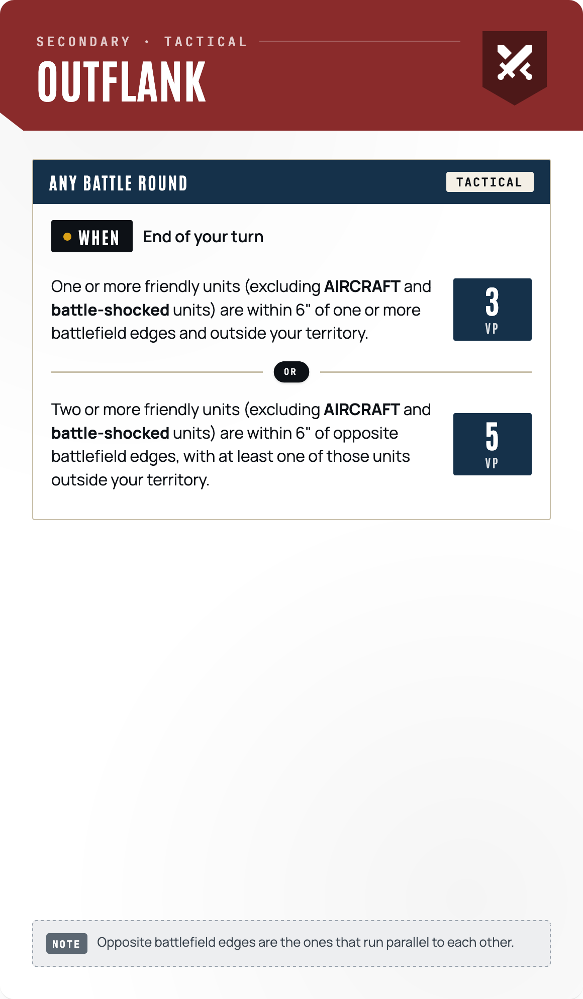
outflank attacker secondary
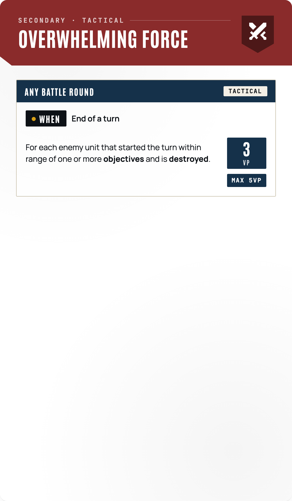
overwhelming force attacker secondary
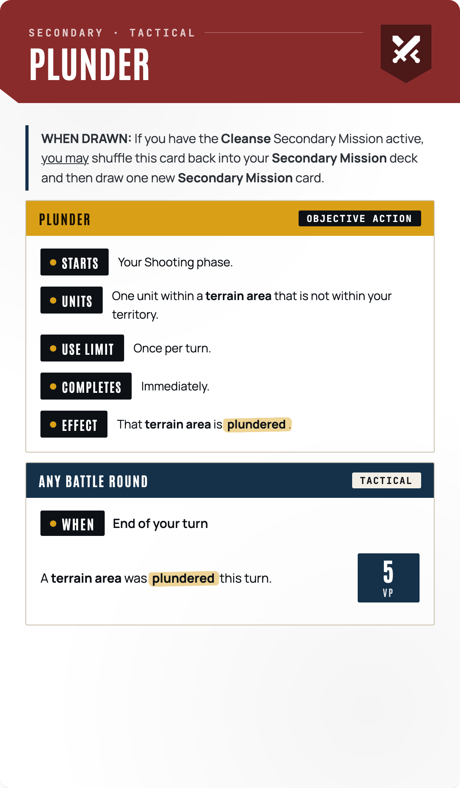
plunder attacker secondary
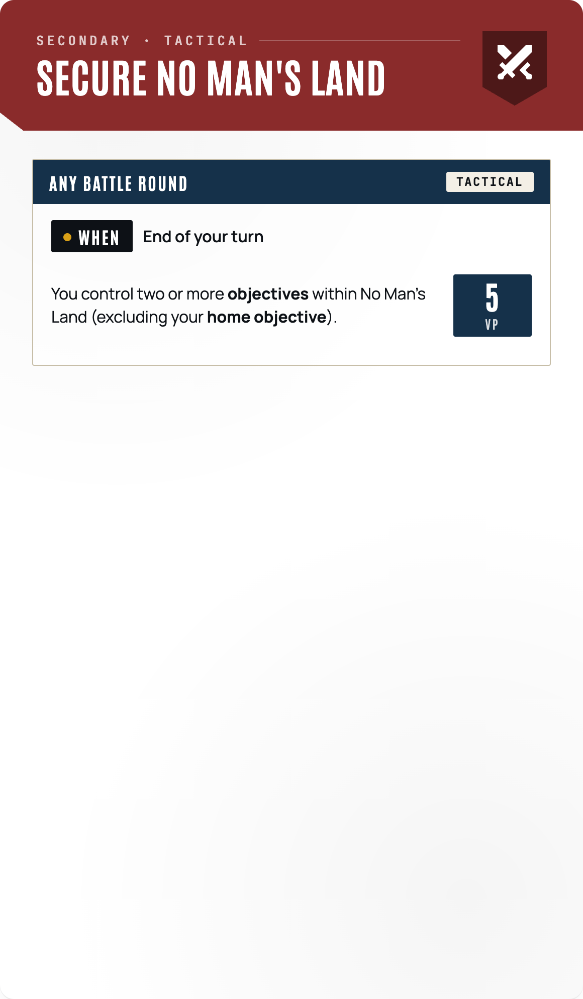
secure no man s land attacker secondary